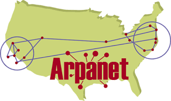

La historia de la informática se remonta a los primeros dispositivos mecánicos de cálculo, como la máquina de Pascal y
la máquina de Babbage. Estos dispositivos eran rudimentarios, pero sentaron las bases para el desarrollo de las
computadoras digitales modernas.
En la década de 1940, se desarrollaron las primeras computadoras digitales electrónicas, como el ENIAC y el Colossus.
Estas computadoras eran enormes y complejas, pero eran mucho más rápidas y potentes que las máquinas mecánicas
anteriores.
En la década de 1950, se desarrollaron las primeras computadoras comerciales, como la UNIVAC I y la IBM 701. Estas
computadoras eran más pequeñas y asequibles que las computadoras militares, lo que permitió que la informática se
extendiera a más empresas y organizaciones.
En la década de 1960, se desarrollaron los primeros lenguajes de programación de alto nivel, como FORTRAN y COBOL. Estos
lenguajes hicieron que la programación fuera más fácil y accesible, lo que llevó a un aumento en el desarrollo de
software.
En la década de 1970, se desarrollaron las primeras microcomputadoras, como la Altair 8800 y la Apple II. Estas
computadoras eran pequeñas y asequibles, lo que permitió que la informática se extendiera a los hogares y las escuelas.
En la década de 1980, se desarrollaron las primeras computadoras personales, como la IBM PC y la Macintosh. Estas
computadoras eran más poderosas y fáciles de usar que las microcomputadoras anteriores, lo que llevó a una adopción
generalizada de la informática personal.
En la década de 1990, se desarrolló el internet, lo que revolucionó la forma en que las personas se comunican, trabajan
y juegan. El internet ha permitido que la informática se expanda a una escala global y ha cambiado la forma en que
vivimos nuestras vidas.
En la actualidad, la informática es una parte integral de la sociedad moderna. Las computadoras se utilizan en todos los
aspectos de nuestras vidas, desde el trabajo y el entretenimiento hasta la educación y la salud. La informática sigue
evolucionando rápidamente y es probable que continúe teniendo un impacto significativo en nuestras vidas en el futuro.
La historia del internet se remonta a los primeros días de la Guerra Fría, cuando el Departamento de Defensa de los
Estados Unidos comenzó a desarrollar una red de computadoras para uso militar. Esta red, llamada ARPANET, se estableció
en 1969 y conectaba originalmente cuatro universidades en California y Utah.
ARPANET se expandió rápidamente en la década de 1970 y se convirtió en una herramienta importante para la investigación
y la educación. En 1982, ARPANET adoptó el protocolo TCP/IP, que sigue siendo el protocolo estándar de internet en la
actualidad.
En 1989, Tim Berners-Lee, un científico británico, inventó la World Wide Web. La Web convirtió internet en una
herramienta más accesible y fácil de usar, lo que llevó a una explosión de crecimiento en el número de usuarios.
En la década de 1990, internet se convirtió en una parte integral de la vida cotidiana. Los usuarios de internet podían
acceder a información, comprar productos y servicios, y comunicarse con amigos y familiares de todo el mundo.
En la década de 2000, internet se volvió aún más accesible con la llegada de los teléfonos inteligentes y las tabletas.
Estos dispositivos móviles permitieron a los usuarios de internet conectarse a cualquier hora y desde cualquier lugar.
En la actualidad, internet es una herramienta indispensable para la comunicación, la educación, el entretenimiento y el
comercio. Más de 4.000 millones de personas de todo el mundo utilizan internet, y el número de usuarios sigue creciendo
rápidamente.
En 1969, ARPANET, una red de comunicación desarrollada por el Departamento de Defensa de EE. UU., fue el precursor de Internet. Conectaba computadoras de diferentes ubicaciones, sentando las bases de la comunicación en red.
En 1989, Tim Berners-Lee propuso la World Wide Web (WWW), una estructura que permitía la transferencia de información a través de un protocolo llamado HTTP. Esto marcó el inicio de la web tal como la conocemos hoy.

En los años 90, surgieron motores de búsqueda como Google, Yahoo! y otros, facilitando la búsqueda de información en la creciente cantidad de contenido en la web.

Internet se expandió rápidamente en los años 90 y principios de los 2000, alcanzando a más personas en todo el mundo y convirtiéndose en una herramienta fundamental en la vida cotidiana.

La aparición de plataformas como Facebook, Twitter, WhatsApp, y otras redes sociales y aplicaciones de mensajería, cambió la forma en que las personas se comunican, compartiendo información y conectándose en línea.

La tecnología 5G está en pleno despliegue global, con más de 70 países que ya han lanzado redes comerciales. Los beneficios del 5G son numerosos, incluyendo velocidades de datos más rápidas, menor latencia y mayor capacidad. Estas mejoras permitirán nuevas innovaciones en áreas como la realidad virtual, la realidad aumentada, la inteligencia artificial y el Internet de las cosas.
En concreto, los beneficios del 5G se pueden resumir en los siguientes puntos:
Velocidades de datos más rápidas
Menor latencia
Mayor capacidad
Los avances en inteligencia artificial (IA) han sido significativos en los últimos años. El aprendizaje profundo, en particular, ha permitido a los sistemas de IA aprender de grandes cantidades de datos y realizar tareas que antes eran imposibles o muy difíciles para las máquinas.
La IA también está siendo utilizada para personalizar la experiencia de los usuarios en una variedad de contextos. Por ejemplo, los sistemas de IA se pueden utilizar para recomendar productos y servicios, personalizar el contenido de los medios y adaptar las experiencias de aprendizaje.
La personalización basada en IA tiene el potencial de mejorar la experiencia de los usuarios, haciéndola más relevante y atractiva. Sin embargo, también plantea algunos desafíos, como la protección de la privacidad y la equidad.
Se espera que la IA continúe desarrollándose rápidamente en los próximos años. Los expertos creen que la IA tendrá un impacto transformador en la sociedad, en áreas como la economía, la política y la cultura.
Algunos de los posibles desarrollos futuros de la IA incluyen:
El desarrollo de sistemas de IA que pueden comprender y responder al lenguaje natural de manera más humana.
El
desarrollo de sistemas de IA que pueden tomar decisiones de forma autónoma.
El desarrollo de sistemas de IA que
pueden crear nuevas tecnologías y productos.
La adopción de la computación en la nube ha crecido de manera exponencial en los últimos años. Según Gartner, el gasto mundial en servicios en la nube alcanzará los 632.700 millones de dólares en 2023, lo que representa un crecimiento del 20,9% con respecto a 2022.
Los servicios en la nube han evolucionado para ofrecer una amplia gama de capacidades. Los principales tipos de servicios en la nube incluyen: IaaS:
IaaS: Infraestructura como servicio
PaaS: Plataforma como servicio
SaaS: Software como servicio
La computación en la nube está teniendo un impacto significativo en la industria. Los servicios en la nube están transformando la forma en que las empresas operan, lo que les permite ser más eficientes, innovadoras y competitivas.
Los avances en las tecnologías de realidad virtual (RV) y realidad aumentada (RA) han sido significativos en los últimos años. En el hardware, se han desarrollado dispositivos más ligeros, cómodos y asequibles. En el software, se han creado aplicaciones más sofisticadas y envolventes.
La RV y la RA se están utilizando actualmente en una amplia gama de aplicaciones, incluyendo:
Entretenimiento: La RV y la RA se utilizan para crear experiencias de entretenimiento inmersivas, como juegos, películas
y experiencias de realidad virtual.
Educación: La RV y la RA se utilizan para crear experiencias educativas
interactivas y envolventes, que pueden ayudar a los estudiantes a aprender de forma más eficaz.
Medicina: La RV y
la RA se utilizan para la formación médica, la rehabilitación y la cirugía.
Diseño: La RV y la RA se utilizan para
el diseño de productos, la arquitectura y el entorno construido.
Entrenamiento empresarial: La RV y la RA se
utilizan para el entrenamiento empresarial, la formación de empleados y la seguridad.
La RV y la RA están transformando la forma en que interactuamos con el contenido en línea. Los juegos, las películas, la educación y las compras se están volviendo más inmersivos y envolventes gracias a estas tecnologías.
Para futuros desarrollos se espera que la RV y la RA sigan evolucionando en los próximos años. Algunas de las tendencias emergentes incluyen:
Dispositivos más compactos y potentes: Los dispositivos de RV y RA se volverán cada vez más pequeños y potentes, lo que
los hará más portátiles y asequibles.
Mejoras en la experiencia del usuario: La experiencia del usuario de la RV y
la RA se mejorará con avances como la retroalimentación háptica y la realidad mixta.
Interfaces más intuitivas: Las
interfaces de la RV y la RA se volverán más intuitivas y fáciles de usar.
Aplicaciones más amplias: La RV y la RA
se utilizarán en una gama más amplia de aplicaciones, incluidas las finanzas, el comercio minorista y la atención
sanitaria.
Si tienes alguna consulta, envíanos tu comentario: